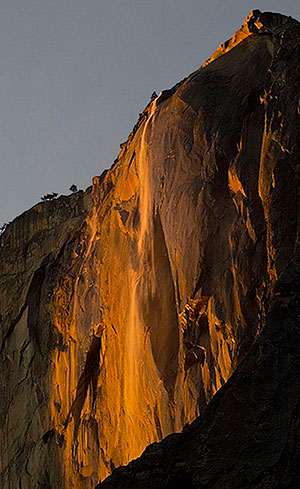

WHAT ARE THE BEST CONDITIONS TO SEE THE NATURAL YOSEMITE FIREFALL : HORSETAIL FALL

The perfect alignment of the sun, the waterfall and the viewer.
The sun comes into position in mid-to-late February each year, so if you're
in the right place, that's when the magic will happen. More on the best time
and place to view the natural Yosemite firefall effect in a bit.
Enough water in Horsetail Fall
In order to get a nice flow in Horsetail Fall a few different things
need to happen. One, there has to be some snow on the ground to provide
the water for the waterfall. Second, it needs to be warm enough during
the day that the sun melts that snow and sends it running over the edge
of the fall. If it is exceptionally cold, the cliff surrounding the waterfall
will still light up, and the trickle of water coming over the edge will
reflect the setting sun, but you won't see the stream of molten fire unless
there is more water.
Clear skies for the Yosemite National Park Firefall
With the sun in the right place, and enough water in Horsetail Fall
to catch the sun, the firefall can still fail to materialize if cloud
cover blocks the sun during the critical minutes of the evening.
For that reason, a cloudy forecast will keep many people away.
However, if that cloudy forecast clears just enough to let the right
beam of sunlight through, you can end up with a one-of-a-kind image
with the firefall surrounded by brilliant pink clouds.
When's the best time to see the Yosemite Firefall?
During the latter half of February, the magical moment itself occurs around
5 to 15 minutes before sunset. However, you should plan to invest several
hours to get to the right place in time. The days when the photographer
Galen Rowell could spot the firefall effect from his car, find a convenient
pull-out and set up for an image are long gone.
People visit Yosemite National Park from all over the country
for the natural firefall event. That means that they are finding
their spot and setting up their tripods earlier and earlier in
the day in order to get just the angle they want. In order to
navigate the parking situation and have enough time to walk out
to a place where you can see the firefall, plan to arrive in the
valley in the late morning or early afternoon.
Spend the time relaxing and enjoying the already-majestic Yosemite scenery,
and get to know the people around you.
Where do I need to go to see the natural Yosemite firefall effect?
There is one designated location to view the natural Yosemite firefall on the eastern
edge of El Capitan on the valley floor. However, with the thousands of people who
arrive each year hoping to see Horsetail Fall glowing, the logistics that surround
getting to one of the classic viewing areas are becoming more complex.
El Capitan Picnic Area
The El Capitan Picnic Area is one of the most popular destinations
for Yosemite firefall viewers and is closest to the location where
Galen Rowell took that first now-legendary photograph. It's also one
of the closest viewing spots, so if you don't have a long telephoto
lens, this will probably be your best bet.